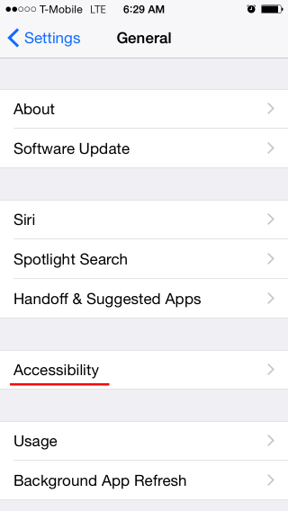
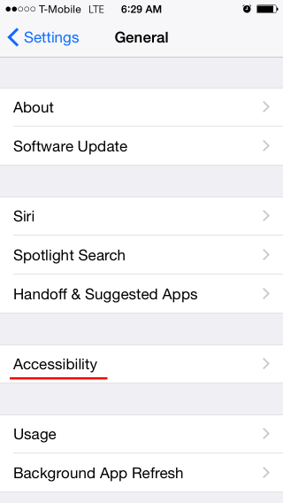
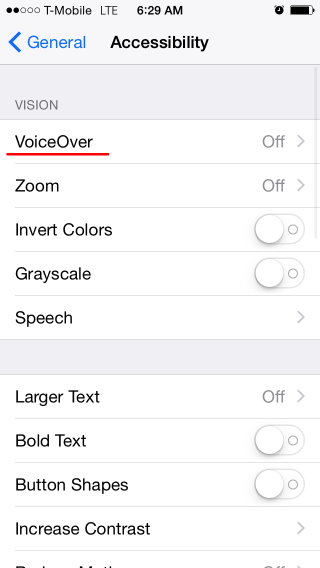
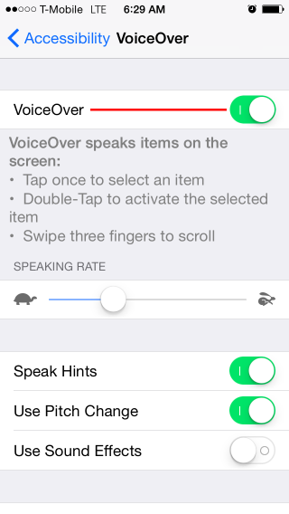
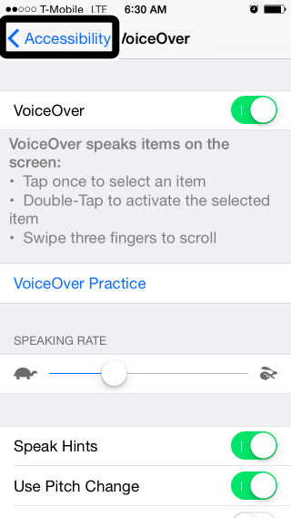
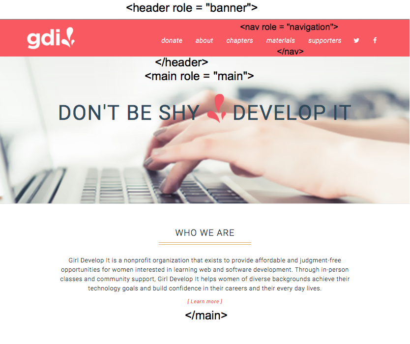

Thinking about Web Accessibility and Inclusive Design
“The power of the Web is in its universality. Access by everyone regardless of disability is an essential aspect”Tim Berners-Lee, W3C Director and inventor of the World Wide Web
As Web Developers what can we do to contribute to this vision?
Define Web Accessibility
“Web accessibility means that people with disabilities can perceive, understand, navigate and interact with the Web, and that they can contribute to the Web.”Introduction to Web Accessibility
From the W3C's Web Accessibility Initiative
Understand more
about this group of users and
the Diversity of User Abilities
Four MajorCategories of Accessibility
The following categories are illustrative are not intended to be an exhaustive listing of all disabilities and barriers.Visual
This can be non-sighted users, users with low-vision, users with obstructed vision, or older users.
Screen readers, brail output, text zooming, high color contrast controls and keyboard navigation can be useful.Auditory
Users with hearing disabilities.
Captions and alternatives for sound-neccessary media can be useful.Motor
A limitation in the independent or purposeful physical movement of the body or of one or more extremities.
Because not everyone can use a mouse or click on small links people with motor disabilities typically use the keyboard, eye trackers, or single buttons to navigate their computer.Cognitive
Involve disorders of any part of the nervous system, including the brain and the peripheral nervous system. This can impact how well people hear, move, see, speak, and understand information.
Users may user a variety of assistive technologies including spelling and grammer tools, bookmarks and history, text-to-speach and voice browser. Users may benefit from document outlines, descriptive titles and easy to read text.More on The Diversity of Web Users
How People with Disabilities Use the Web - Diversity of Web UsersFrom the W3C's Web Accessibility Initiative
Challange Assuptions About Who is Using Our Digital Products
You can automatically enable closed captioning by adding ?cc_load_policy=1 to the url of an embedded YouTube video
What isAssistive Technology?
Provides services beyond those offered
by the browser to facilitate user interaction
with web content by people with disabilities
Accessible Rich Internet Applications (WAI-ARIA) 1.0
Important Terms
Activate VoiceOver Screen Reader - iPhone
Instructions for activating and using VoiceOver on an iOS device.Activate VoiceOver from Settings > General > Accessibility
 

 

Using VoiceOver
Screen Reader on iPhone
Once VoiceOver is Activated
Activate an Item on the Screen: Double Tap
Next Item: Flick Right
Previous Item: Flick Left
Scroll Down/Up: Three Finger Up/Down
Activate Rotor: Turn Clock-wise
Next/Previous Rotor Item: Flick Down/Flick Up
Activate VoiceOver
Screen Reader - OSX
Instructions for activating VoiceOver for OSX.
Activate VoiceOver from System Preferences > Accessibility > Enable VoiceOver checkbox
Using VoiceOver
Screen Reader for OSX
Once VoiceOver is Activated
Turn on VoiceOver: command + F5
Use the VO Keys for many tasks: control + option
From the address bar enter the Web area: VO + shift + down arrow
Next item: VO + right arrow
Previous item: VO + left arrow
Open Web Roter: VO + U
The Web Roter is used to navigate a page by various elements such as headings, landmarks or links
Screen Readers for Windows
- JAWS
- NVDA (Open source)
- Window-Eyes
- ChromeVox (Chome Plug-in)
Importance ofSemantic HTML Elements
The accessibility API is part of a device's operating system and represents objects in a user interface, exposing information about each object within the application or Web page.Semantic HTML elements are immediately identified by the accessibility API and interpreted by screen readers. Non-semantic elements convey no information to the accessibility API.
Semantic Elements
Go to some Web page
Non-Semantic Elements
Divs styled with CSS to look semantic
Go to some Web page
The example above is often seen when developers implement a div with a CSS background as a link. A common example would be the implemenation of a social sharing icon on a site.
Non-Semantic Button ExampleThe following exercises illustrate how semantic HTML elements and non-semantic elements can look the same but are interpreted differently by screen readers
Exercise One
Use VoiceOver to read content that uses
Non-Semantic HTML elements
Exercise 2
Modify the HTML using Semantic HTML elements
and read the page again
Using Browser Plugins for Accessibility Testing
The WAVE browser extension from WebAIM allows you to evaluate web content for accessibility issues directly within the browser. It is available for Chrome and FireFox.
WAVE Web Accessibilty Evaluation Tool(The way the text above is linked is intentional and is an example of link context from the WCAG which we will discuss later)
Once installed a "W" icon will appear in the browser toolbar. Press the icon to run an audit of the page. Errors and warnings will appear within the page. Click the error or warning to see more information in the left of the browser.
Using Browser Plugins for Accessibility Testing
tota11y is an accessibility visualization toolkit from Khan Academy. It can be added to Chrome from the Chrome Web Store
tota11y Accessibility Visualization ToolkitExercise 3
Use an accessibility testing plugin to run an automated test of our corrected page
Semantic CorrectionsWe used Sematic HTML elements!
What's with the all the errors?
Web Content Accessibility Guidelines - WCAG 2.0
A technical standard made of Four Principles with Twelve Guidelines containing testable Success Criteria
- Perceivable
- Operable
- Understandable
- Robust
Using Web Content Accessibility Guidelines
WCAG 2.0
At first glance the WCAG may look hard to understand. It contains a lot of information.
Web Content Accessibility Guidelines 2.0Together, let's take a look at some easier ways to use these guidelines
WCAG 2 at a GlanceUnderstanding Web Content Accessibility Guidelines 2.0
Exercise 4
Correct errors produced by automated test results
Modify HTML from Exercise TwoWCAG Success Criteria Examples and Solutions
DOCTYPE html lang="en"
Page Heading
Join our mailing list
Accessible Rich
Internet Applications (ARIA 2.0)
A set of accessibility attributes especially suited to HTML
ARIA Roles
Roles define the type of element or widget presented to the accessibility API
Categories of ARIA Roles
Landmark Roles - Identify content areas of a page. Help assistive devices navigate pages.
Widget Roles - Act as standalone user interface widgets or as part of larger, composite widgets.
Document Structure Roles - Describe structures that organize content in a page. Document structures are not usually interactive.
Abstract Roles - Abstract roles are used for the ontology. Not used in code.
This workshop focuses on Landmark and Widget rolesCommon Landmark Roles
role = main
The main content of a page. Should only be used once on a page.
role = banner
Typically the “header” of a page that includes the site logo.
role = contentinfo
Typically the “footer” of a page which includes information such as copyright.
role = navigation
A collection of links to navigate the site.
Landmark roles will be used in the final project
Landmark Role Usage
Widget Roles
role = button
role = checkbox
role = radio
The folowing roles typically act as containers that manage othe widgets:
role = radiogroup
role = tablist
Exercise 5
1. Assign a varity of widget roles to a div
2. Listen to changes in the screen reader
Try ItMore Information on ARIA Roles
The Roles ModelARIA States and Properities
States and Properities announce the state of an element to the accessibility API. Often times, but not always, states are activated by user interaction
For example you can let a user know that a form input field is required by using aria-required="true"
Indicating State
role = checkbox | aria-selected = true
input type = text | aria-required = true
role = button | aria-pressed = true or false (creates a toggle button)
Exercise 6
1. Assign selected ARIA States and Properties to Semantic HTML
2. Listen to changes in the screen reader
Try ItMore Information on ARIA States
ARIA States and PropertiesCommon Accessibility Barriers
-
Missing alt attribute on images (Also impacts SEO)
Missing heading elements (Also impacts SEO)
Missing landmarks and regions
Missing labels for form inputs
Poor contrast ratio
Lack of Keyboard Navigation
Final Project
Project SiteletGet Involved !!
Bay Area Accessibility and Inclusive Design Meetup
W3C Working and Interest Groups - Web Accessibility Initiative (WAI)